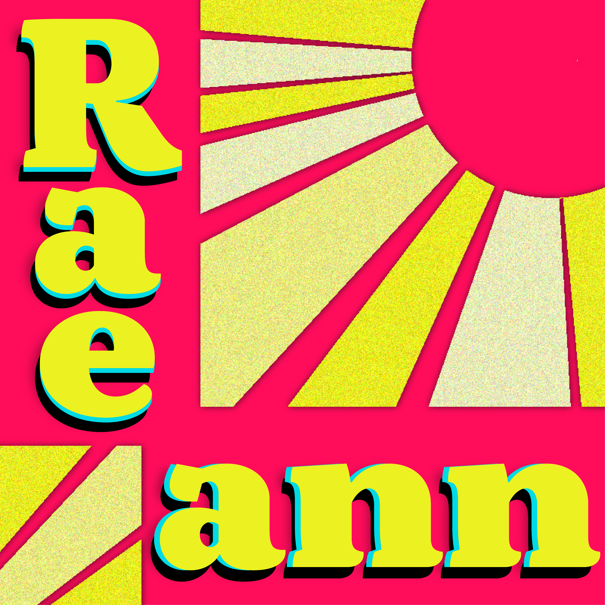
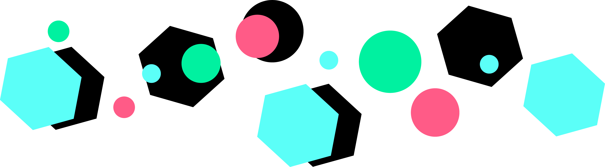

My name’s Raeann Wiechens, but I go by Rae. I was born and raised in St. Louis, Missouri. After graduating high school, I attended Webster University where I studied biology, and later switched to advertising and marketing. Ultimately, I decided not to continue my education, unsure of in which direction to head. Although I don’t hold a formal degree, the three years that I attended college helped me to gain new skills that I use today.
After college, I spent several years working various jobs in retail, customer service, and as a nanny. Throughout that time period, I learned a lot about myself, what I enjoyed doing, and what I wanted my future to look like. I took advantage of free resources online, and worked on improving my writing skills, and dabbled with learning web design.
I feel fortunate to have two jobs that allow me to use the skills that I’ve acquired on my own and within the company, whether it be technical or creative.
I find creative tasks the most rewarding. Creating art through different mediums has always been a hobby of mine, whether it be sketching, writing or crafting. Somewhat recently, I’ve had the opportunity to learn Illustrator, InDesign, and Photoshop through one of my employers. I hadn’t considered pursing graphic design until I started learning these programs in-depth, and found that they were really fun to use.
As I move forward in my career I would love to specialize in illustration, but I’m willing to prioritize my focus based on the needs of my employer.
Outside of work, I like exploring new parks and hanging out with my pet rabbit, Bun Bun. You can also catch me doodling (check out my Instagram if you’re interested) or making use of my absurd thoughts at a comedy open mic.
